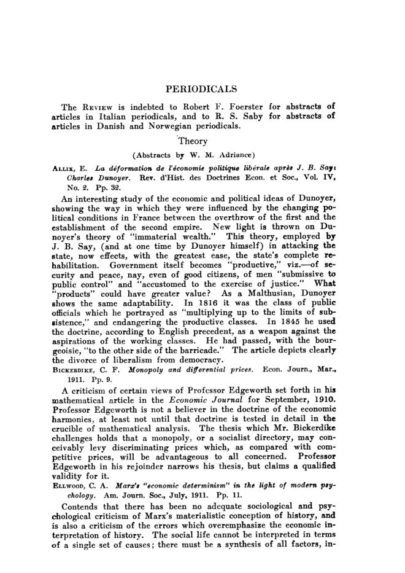

Dezembro de 1911: o imposto sobre as sociedades e o que é custo
Leitura: 5 min
Robinson conta a história do imposto federal de 1909 sobre as sociedades, Davenport redefine o custo como alternativa sacrificada, e Fairchild e Hammond tratam de imigração nas crises e de fretes ferroviários.


Em 16 de junho de 1909, o presidente Taft mandou ao Senado uma mensagem especial. Advertia que as propostas de imposto de renda em debate seriam provavelmente inconstitucionais e oferecia um substituto: um imposto federal sobre as sociedades. É com essa história que Maurice H. Robinson, da University of Illinois, abre o número de dezembro de 1911 da American Economic Review.
É o quarto número da revista, o último de 1911. Traz quatro artigos, uma comunicação de Carl Vrooman, 45 resenhas organizadas por área, listas de livros novos, documentos oficiais, resumos de periódicos e as notas da redação.
O que trazem Robinson e Davenport?
Robinson mostra como uma lei que media o lucro pelo que fora efetivamente pago no ano foi reescrita, na prática, pelos regulamentos do Tesouro, e examina as brechas, a publicidade frustrada das declarações e as primeiras estatísticas sobre as sociedades americanas. H. J. Davenport, da University of Missouri, discute o que é custo de produção e conclui que ele é, sobretudo, a alternativa sacrificada. Os dois têm páginas comentadas próprias.
A saída de estrangeiros alivia as crises?
Henry Pratt Fairchild, de Yale, aproveita um dado novo: desde julho de 1907, os relatórios do Commissioner-General of Immigration registram também as saídas. Com uma tabela mensal de entradas e saídas de 1907 a 1910, conclui que a saída provocada pela crise é muito menor do que se supunha como alívio do mercado de trabalho, porque as entradas nunca cessam. No ano fiscal de 1908, saíram 714.828 estrangeiros.
Por que as ferrovias queriam subir os fretes?
M. B. Hammond, da Ohio State University, relata os pedidos de aumento de fretes de 1910. A emenda Mann-Elkins dera à Interstate Commerce Commission o poder de suspender aumentos e pusera nas ferrovias o ônus de provar que a nova tarifa era justa. A comissão decidiu os dois casos, do Leste e do Oeste, em 22 de fevereiro de 1911 e exigiu que as ferrovias cancelassem os aumentos anunciados.
Pelos embarcadores, Louis D. Brandeis sustentou que a administração científica cobriria os custos maiores.
Para Harrington Emerson, testemunha dos embarcadores, as ferrovias “poderiam fazer uma economia de talvez US$ 300 milhões por ano, ou não menos de US$ 1 milhão por dia”. (“could effect an economy of perhaps $300,000,000 a year or not less than $1,000,000 a day”)
O que mais traz o número?
Carl Vrooman contesta a resenha de E. R. Dewsnup sobre seu livro de problemas ferroviários e diz que uma réplica de 2.500 palavras não coube na revista. Entre as resenhas, Carl C. Plehn trata do The Income Tax, de Edwin R. A. Seligman; Edward D. Jones, dos Principles of Scientific Management, de Frederick W. Taylor; S. M. MacVane, das cartas de John Stuart Mill; e George Ray Wicker, das conferências de Jacob H. Hollander no centenário da primeira obra importante de Ricardo.
As notas anunciam a reunião anual em Washington, de 27 a 30 de dezembro, com Taft como orador sobre o orçamento. Mais de 650 sócios tinham entrado até 20 de outubro, mas as despesas também cresceram; com cerca de 2.200 sócios, a associação queria chegar a 3.000 para dispensar o fundo de garantia.
Na minha leitura
Na minha leitura, os dois artigos principais tratam do mesmo problema por lados opostos: a distância entre o que a contabilidade registra e o que a economia chama de lucro e de custo. Robinson mostra uma lei que tentou definir o lucro pelo caixa do ano e precisou ser corrigida pela prática contábil de competência, estoques e depreciação. Davenport vai além da contabilidade: o custo que governa a decisão inclui o salário que o empresário deixou de ganhar e a renda que seus bens renderiam em outro uso, itens que não aparecem em nenhum livro-caixa.
A consequência é a mesma nos dois casos. A base de um imposto e o custo que orienta a oferta dependem de definições, e cada definição muda incentivos: juros dedutíveis favorecem a dívida, e lucros contábeis podem esconder prejuízos econômicos.
Glossário
- Imposto sobre as sociedades (corporation tax)
- imposto federal americano de 1909, formalmente sobre o privilégio de operar como sociedade, calculado sobre o lucro líquido.
- Regime de caixa
- registro de receitas e despesas pela data do pagamento efetivo.
- Regime de competência
- registro de receitas e despesas pelo período a que se referem, independentemente do pagamento.
- Custo de oportunidade
- valor da melhor alternativa sacrificada ao escolher um uso para o tempo, a terra ou o capital.
- Lucro necessário
- parte do lucro que apenas iguala o ganho da melhor alternativa e, por isso, entra no custo, segundo Davenport.
- Interstate Commerce Commission
- comissão federal que regulava as tarifas das ferrovias interestaduais.
- Emenda Mann-Elkins
- lei de 1910 que deu à comissão o poder de suspender aumentos de tarifa e pôs nas ferrovias o ônus da prova.
- Administração científica
- organização do trabalho por estudo prévio das tarefas, com instruções detalhadas e bônus por rendimento.
Artigos (4)
- The Federal Corporation Tax — Maurice H. Robinson (University of Illinois) (pp. 691–723). Robinson reconstrói a origem do imposto federal de 1909 sobre as sociedades, proposto por Taft como substituto do imposto de renda que o Senado parecia disposto a aprovar. A lei cobrava 1% do lucro líquido acima de US$ 5.000 e definia receitas e despesas pelo que fora efetivamente pago no ano, contra o parecer dos contadores; os regulamentos do Tesouro a reaproximaram da contabilidade usual. Robinson discute a limitação dos juros dedutíveis, o tratamento das holdings e das seguradoras mútuas, a publicidade das declarações, suspensa na prática, e as primeiras estatísticas sobre as sociedades do país. JSTOR · ler o comentário
- Cost and Its Significance — H. J. Davenport (University of Missouri) (pp. 724–752). Davenport sustenta que o custo de produção só influi no preço por meio da oferta, e que o custo relevante é, em geral, a alternativa sacrificada: o custo de oportunidade. Com exemplos numéricos, um carpinteiro, um fazendeiro de trigo e um fabricante de chapéus, separa o lucro necessário, que é parte do custo, do lucro excedente, e mostra que a marginalidade é questão de ganho relativo. Conclui que a velha disputa entre utilidade e custo perde o sentido, porque o custo consiste sobretudo em demandas concorrentes, e que o empresário é antes intermediário que causa do ajuste dos preços. JSTOR · ler o comentário
- Immigration and Crises — Henry Pratt Fairchild (Yale University) (pp. 753–765). Fairchild examina a relação entre imigração e crises industriais com os dados de saída de estrangeiros, registrados oficialmente desde julho de 1907, e uma tabela mensal de entradas e saídas de janeiro de 1907 a dezembro de 1910. Reconhece que a prosperidade regula o volume de entradas e que a depressão provoca grande saída, mas conclui que o efeito dessa saída em aliviar o mercado de trabalho é muito menor do que se supunha, porque as entradas nunca cessam. Sustenta ainda que a imigração tende a agravar as crises, entre outros motivos por dificultar a formação de poupança dos trabalhadores no país. JSTOR
- Recent Efforts to Advance Freight Rates — M. B. Hammond (Ohio State University) (pp. 766–789). Hammond relata os casos de 1910 e 1911 em que as ferrovias do Leste e do Oeste tentaram elevar fretes e a Interstate Commerce Commission, com o novo poder de suspensão dado pela emenda Mann-Elkins, examinou os aumentos. A emenda pôs nas ferrovias o ônus de provar que a tarifa aumentada era justa e razoável, e Hammond descreve a disputa sobre o sentido dessa regra. Destaca o argumento dos embarcadores, levado por Louis D. Brandeis, de que a administração científica cobriria os custos maiores, e a decisão de fevereiro de 1911, que obrigou as ferrovias a cancelar os aumentos anunciados. JSTOR
Resenhas (45)
- Simon N. Patten, The Social Basis of Religion — T. N. Carver (pp. 790–794). Livro que expõe, na linguagem do economista, correntes do pensamento cristão popular, sobretudo protestante. JSTOR
- Jacob H. Hollander, David Ricardo: A Centenary Estimate — George Ray Wicker (pp. 794–799). Três conferências dadas em Harvard na primavera de 1910 para marcar o centenário da primeira publicação importante de Ricardo. JSTOR
- The Letters of John Stuart Mill, org. Hugh S. R. Elliot — S. M. MacVane (pp. 800–802). Dois volumes de cartas de Mill, inclusive as que tratam da Guerra Civil americana e da atitude britânica diante dela. JSTOR
- Karl Diehl e Paul Mombert, Ausgewählte Lesestücke zum Studium der politischen Oekonomie; A. Adler, Leitfaden der Volkswirtschaftslehre — Walter M. Adriance (pp. 802–805). Uma coletânea de textos para o estudo da economia política e a sexta edição de um manual alemão. JSTOR
- Frédéric Passy, La Vie Économique: Questions Essentielles — Royal Meeker (pp. 805–806). Pequeno livro de divulgação que trata de 46 temas em menos de 123 páginas. JSTOR
- Carl Ergang, Untersuchungen zum Maschinenproblem in der Volkswirtschaftslehre — Anna Youngman (pp. 806–808). Estudo de história das doutrinas sobre o problema das máquinas, com atenção à escola clássica. JSTOR
- Rudolph Granichstaedten-Czerva, Probleme der modernen Volkswirtschaft — John H. Gray (pp. 808–809). Livro de um autor que se apresenta como economista prático e parte das premissas dos clássicos ingleses. JSTOR
- W. J. Ashley (org.), British Dominions: Their Present Commercial and Industrial Condition — Edward Porritt (pp. 811–812). Nove conferências sobre as condições econômicas da Austrália, da Nova Zelândia e de outros domínios britânicos. JSTOR
- Olive Schreiner, Woman and Labor — Kate Holladay Claghorn (pp. 812–813). Ensaio sobre o trabalho das mulheres e sua busca de oportunidades mais amplas. JSTOR
- Die Industrie und der Staat (Tübingen, 1910) — John H. Gray (pp. 813–814). Relato breve das mudanças industriais da Alemanha no último meio século e de seus efeitos sobre a teoria econômica. JSTOR
- Jan St. Lewinski, L'Évolution Industrielle de la Belgique — Arthur Sargent Field (pp. 815–816). Estudo da evolução industrial belga desde o fim do século XVIII, publicado pelos Instituts Solvay. JSTOR
- Moses Hoffmann, Der Geldhandel der deutschen Juden während des Mittelalters bis zum Jahre 1350 — Julius Klein (pp. 816–817). Monografia de história econômica sobre o comércio de dinheiro na Alemanha medieval, até 1350. JSTOR
- Max Eckert, Leitfaden der Handelsgeographie — Edward Van Dyke Robinson (pp. 818–819). Terceira edição de um manual alemão de geografia comercial, com mapas e diagramas. JSTOR
- Hans Goldschmidt, Die deutsche Seefischerei in der Gegenwart und die Mittel zu ihrer Hebung — E. J. Clapp (pp. 821–822). Estudo da pesca marítima alemã e das medidas para desenvolvê-la. JSTOR
- Report of the Barge Canal Terminal Commission of the State of New York — Edwin J. Clapp (pp. 826–827). Relatório em dois volumes sobre os terminais do canal de barcaças de Nova York. JSTOR
- A. N. Holcombe, Public Ownership of Telephones on the Continent of Europe — Charles F. A. Currier (pp. 827–828). Estudo das condições do serviço telefônico na Europa continental. JSTOR
- Max Roscher, Die Kabel des Weltverkehrs — A. N. Holcombe (pp. 829–830). Tese de doutorado em Berlim sobre a economia da telegrafia submarina. JSTOR
- Martin Saint-Léon, Le Petit Commerce Français: Sa Lutte pour la Vie — Paul S. Peirce (pp. 831–832). Estudo do pequeno comércio francês, com ênfase na iniciativa organizada dos próprios comerciantes. JSTOR
- Frederick W. Taylor, The Principles of Scientific Management; John C. Duncan, The Principles of Industrial Management — Edward D. Jones (pp. 833–836). Dois livros sobre a organização científica do trabalho e da indústria. JSTOR
- William Morse Cole, Accounting and Auditing — Stephen W. Gilman (pp. 836–839). Manual de contabilidade e auditoria. JSTOR
- John J. Sullivan, American Corporations: The Legal Rules Governing Corporate Organization and Management — John H. Gray (pp. 841–842). Manual das regras jurídicas de organização e administração das sociedades anônimas. JSTOR
- Theodor Vogelstein, Organisationsformen der Eisenindustrie und Textilindustrie in England und Amerika — Abraham Berglund (pp. 842–843). Estudo dos fatores de integração ou dispersão das etapas de produção do ferro e dos têxteis na Inglaterra e nos Estados Unidos. JSTOR
- S. Tschierschky, Kartell und Trust; Wilhelm Kantorowicz, Kartell-Probleme — Francis Walker (pp. 844–845). Dois livros que tratam de cartéis e trustes por métodos e pontos de vista opostos. JSTOR
- Scott Nearing, The Solution of the Child Labor Problem — Edith Abbott (pp. 846). Livro curto sobre o problema do trabalho infantil. JSTOR
- Susan M. Kingsbury (org.), Labor Laws and their Enforcement with Special Reference to Massachusetts — Frank T. Carlton (pp. 847–848). Estudos sobre a aplicação das leis trabalhistas em Massachusetts. JSTOR
- Les Conditions du Travail aux États-Unis, Étudiées Spécialement dans la Tannerie au Chrome pour Chaussures — Carl E. Parry (pp. 848–849). Relatórios ao ministério do Trabalho francês sobre o trabalho nos Estados Unidos, a partir de uma viagem de 1908. JSTOR
- Ernest Mahaim, Les Abonnements d'Ouvriers sur les Lignes de Chemins de Fer Belges et leurs Effets Sociaux — G. G. Groat (pp. 850–851). Estudo dos bilhetes de assinatura para trabalhadores nas ferrovias belgas e de seus efeitos sociais. JSTOR
- Die Lohnämter in Victoria (Schmoller e Sering, Forschungen, nº 154) — J. E. LeRossignol (pp. 851–853). Monografia sobre os conselhos de salários do estado de Victoria, na Austrália. JSTOR
- Georges-Cahen, Les Fonctionnaires: Leur Action Corporative — George E. Barnett (pp. 853–855). Estudo da organização sindical dos funcionários públicos na França. JSTOR
- Raphaël-Georges Lévy, Banques d'Émission et Trésors Publics — Charles A. Conant (pp. 858–860). Estudo das relações entre os bancos de emissão e os tesouros públicos. JSTOR
- Edwin R. A. Seligman, The Income Tax: A Study of the History, Theory and Practice of Income Taxation at Home and Abroad — Carl C. Plehn (pp. 862–867). Estudo da história, da teoria e da prática do imposto de renda nos Estados Unidos e no exterior. JSTOR
- George Coates, Tariff Reform, Employment, and Imperial Unity; Geoffrey Drage, The Imperial Organization of Trade — O. D. Skelton (pp. 867–869). Dois estudos britânicos sobre tarifas e comércio imperial. JSTOR
- Leonard Alston, Elements of Indian Taxation — Garrett Droppers (pp. 869–870). Manual sobre os impostos da Índia britânica, inclusive o imposto sobre a terra. JSTOR
- Henry Pratt Fairchild, Greek Immigration to the United States — Prescott F. Hall (pp. 873–874). Livro preparado como parte de um doutorado em Yale. JSTOR
- M. J. Landa, The Alien Problem and its Remedy — Prescott F. Hall (pp. 874–876). Livro britânico sobre a legislação de estrangeiros. JSTOR
- Les Naissances en France: La Situation, Ses Conséquences, Ses Causes — Walter F. Willcox (pp. 876–878). Livro que reúne o debate francês sobre a natalidade. JSTOR
- Edwin L. Earp, The Social Engineer — Beatrice Sheets (pp. 879–880). Exposição, para estudantes e voluntários religiosos, dos princípios do serviço social. JSTOR
- Gilbert L. Campbell, Industrial Accidents and their Compensation — Miles M. Dawson (pp. 880–881). Ensaio premiado sobre acidentes de trabalho e sua indenização. JSTOR
- Philipp Loewenfeld, Pensionskassen und Arbeitsvertrag — F. S. Deibler (pp. 881–882). Monografia sobre os fundos de pensão de empresa e o contrato de trabalho. JSTOR
- Alexander Johnson, The Almshouse: Construction and Management — Jeffrey R. Brackett (pp. 883–884). Manual de construção e administração de asilos para pobres. JSTOR
- Alice Willard Solenberger, One Thousand Homeless Men: A Study of Original Records — William Kirk (pp. 884–886). Estudo de registros originais sobre mil homens sem moradia. JSTOR
- E. Untermann, Die logischen Mängel des engern Marxismus — Lewis H. Haney (pp. 886–887). Livro sobre as falhas lógicas do marxismo estrito. JSTOR
- Edward Jackson, Industrial Co-operation in Bristol — James Ford (pp. 888). História da cooperação industrial em Bristol. JSTOR
- Augustus D. Webb, The New Dictionary of Statistics — Allyn A. Young (pp. 890–891). Dicionário de estatísticas que agrupa os dados de cada campo em verbetes. JSTOR
- Otto Hübners Geographisch-statistische Tabellen aller Länder der Erde, org. Franz von Juraschek — W. B. B. (pp. 891). Tabelas de área, população, finanças, dívida e forças armadas de 62 países. JSTOR
Novos livros (15)
- New Books (teoria e sua história) — redação (pp. 809–810). Lista de lançamentos de obras gerais, teoria e história do pensamento. JSTOR
- New Books (história econômica e geografia) — redação (pp. 819–820). Lista de lançamentos de história econômica e geografia. JSTOR
- New Books (agricultura, mineração, florestas e pesca) — redação (pp. 822–823). Lista de lançamentos sobre agricultura, mineração, florestas e pesca. JSTOR
- New Books (transporte e comunicações) — redação (pp. 830–831). Lista de lançamentos sobre transporte e comunicações. JSTOR
- New Books (comércio e crises comerciais) — redação (pp. 832–833). Lista de lançamentos sobre comércio e crises comerciais. JSTOR
- New Books (contabilidade, métodos de negócio e investimentos) — redação (pp. 839–840). Lista de lançamentos sobre contabilidade, administração e investimentos. JSTOR
- New Books (capital e organizações capitalistas) — redação (pp. 845). Lista de lançamentos sobre capital e organização de empresas. JSTOR
- New Books (trabalho e organizações trabalhistas) — redação (pp. 855–858). Lista de lançamentos sobre trabalho e sindicatos. JSTOR
- New Books (moeda, preços, crédito e bancos) — redação (pp. 860–862). Lista de lançamentos sobre moeda, crédito e bancos. JSTOR
- New Books (finanças públicas, tributação e tarifas) — redação (pp. 870–872). Lista de lançamentos sobre finanças públicas e tarifas. JSTOR
- New Books (população e migração) — redação (pp. 878–879). Lista de lançamentos sobre população e migração. JSTOR
- New Books (problemas sociais e reformas) — redação (pp. 880). Lista de lançamentos sobre problemas sociais e reformas. JSTOR
- New Books (seguros e pensões) — redação (pp. 882–883). Lista de lançamentos sobre seguros e pensões. JSTOR
- New Books (pauperismo e assistência) — redação (pp. 886). Lista de lançamentos sobre pobreza e assistência. JSTOR
- New Books (socialismo e cooperativas) — redação (pp. 888–890). Lista de lançamentos sobre socialismo e cooperativas. JSTOR
Documentos, periódicos e notas (4)
- [American Railroad Problems]: A Communication — Carl Vrooman (pp. 823–826). Carta em que Vrooman contesta a resenha de E. R. Dewsnup, publicada em março, sobre seu livro American Railway Problems; diz que uma réplica de 2.500 palavras não coube na revista e examina um único exemplo, o dos acidentes ferroviários. JSTOR
- Documents, Reports and Legislation — redação (pp. 892–917). Resumos de publicações oficiais, relatórios e leis, por área. JSTOR
- Periodicals — redação e colaboradores (pp. 918–969). Resumos de artigos de periódicos americanos e estrangeiros, organizados por área. JSTOR
- Notes — redação (pp. 970–981). Reunião anual em Washington, de 27 a 30 de dezembro; mais de 650 novos sócios até 20 de outubro e cerca de 2.200 no total; conferência de Berna, de agosto de 1911, convocada pela Carnegie Endowment for International Peace. JSTOR
Fontes
- The Federal Corporation Tax (pp. 691–723). JSTOR · Internet Archive (PDF)
- Cost and Its Significance (pp. 724–752). JSTOR · Internet Archive (PDF)
- Immigration and Crises (pp. 753–765). JSTOR · Internet Archive (PDF)
- Recent Efforts to Advance Freight Rates (pp. 766–789). JSTOR · Internet Archive (PDF)
- [untitled] The American Economic Review, (1911-12-01), pages 790-794 (pp. 790–794). JSTOR · Internet Archive (PDF)
- [untitled] The American Economic Review, (1911-12-01), pages 794-799 (pp. 794–799). JSTOR · Internet Archive (PDF)
- [untitled] The American Economic Review, (1911-12-01), pages 800-802 (pp. 800–802). JSTOR · Internet Archive (PDF)
- [untitled] The American Economic Review, (1911-12-01), pages 802-805 (pp. 802–805). JSTOR · Internet Archive (PDF)
- [untitled] The American Economic Review, (1911-12-01), pages 805-806 (pp. 805–806). JSTOR · Internet Archive (PDF)
- [untitled] The American Economic Review, (1911-12-01), pages 806-808 (pp. 806–808). JSTOR · Internet Archive (PDF)
- [untitled] The American Economic Review, (1911-12-01), pages 808-809 (pp. 808–809). JSTOR · Internet Archive (PDF)
- New Books (pp. 809–810). JSTOR · Internet Archive (PDF)
- [untitled] The American Economic Review, (1911-12-01), pages 811-812 (pp. 811–812). JSTOR · Internet Archive (PDF)
- [untitled] The American Economic Review, (1911-12-01), pages 812-813 (pp. 812–813). JSTOR · Internet Archive (PDF)
- [untitled] The American Economic Review, (1911-12-01), pages 813-814 (pp. 813–814). JSTOR · Internet Archive (PDF)
- [untitled] The American Economic Review, (1911-12-01), pages 815-816 (pp. 815–816). JSTOR · Internet Archive (PDF)
- [untitled] The American Economic Review, (1911-12-01), pages 816-817 (pp. 816–817). JSTOR · Internet Archive (PDF)
- [untitled] The American Economic Review, (1911-12-01), pages 818-819 (pp. 818–819). JSTOR · Internet Archive (PDF)
- New Books (pp. 819–820). JSTOR · Internet Archive (PDF)
- [untitled] The American Economic Review, (1911-12-01), pages 821-822 (pp. 821–822). JSTOR · Internet Archive (PDF)
- New Books (pp. 822–823). JSTOR · Internet Archive (PDF)
- [American Railroad Problems]: A Communication (pp. 823–826). JSTOR · Internet Archive (PDF)
- [untitled] The American Economic Review, (1911-12-01), pages 826-827 (pp. 826–827). JSTOR · Internet Archive (PDF)
- [untitled] The American Economic Review, (1911-12-01), pages 827-828 (pp. 827–828). JSTOR · Internet Archive (PDF)
- [untitled] The American Economic Review, (1911-12-01), pages 829-830 (pp. 829–830). JSTOR · Internet Archive (PDF)
- New Books (pp. 830–831). JSTOR · Internet Archive (PDF)
- [untitled] The American Economic Review, (1911-12-01), pages 831-832 (pp. 831–832). JSTOR · Internet Archive (PDF)
- New Books (pp. 832–833). JSTOR · Internet Archive (PDF)
- [untitled] The American Economic Review, (1911-12-01), pages 833-836 (pp. 833–836). JSTOR · Internet Archive (PDF)
- [untitled] The American Economic Review, (1911-12-01), pages 836-839 (pp. 836–839). JSTOR · Internet Archive (PDF)
- New Books (pp. 839–840). JSTOR · Internet Archive (PDF)
- [untitled] The American Economic Review, (1911-12-01), pages 841-842 (pp. 841–842). JSTOR · Internet Archive (PDF)
- [untitled] The American Economic Review, (1911-12-01), pages 842-843 (pp. 842–843). JSTOR · Internet Archive (PDF)
- [untitled] The American Economic Review, (1911-12-01), pages 844-845 (pp. 844–845). JSTOR · Internet Archive (PDF)
- New Books (pp. 845). JSTOR · Internet Archive (PDF)
- [untitled] The American Economic Review (1911-12-01), page 846 (pp. 846). JSTOR · Internet Archive (PDF)
- [untitled] The American Economic Review, (1911-12-01), pages 847-848 (pp. 847–848). JSTOR · Internet Archive (PDF)
- [untitled] The American Economic Review, (1911-12-01), pages 848-849 (pp. 848–849). JSTOR · Internet Archive (PDF)
- [untitled] The American Economic Review, (1911-12-01), pages 850-851 (pp. 850–851). JSTOR · Internet Archive (PDF)
- [untitled] The American Economic Review, (1911-12-01), pages 851-853 (pp. 851–853). JSTOR · Internet Archive (PDF)
- [untitled] The American Economic Review, (1911-12-01), pages 853-855 (pp. 853–855). JSTOR · Internet Archive (PDF)
- New Books (pp. 855–858). JSTOR · Internet Archive (PDF)
- [untitled] The American Economic Review, (1911-12-01), pages 858-860 (pp. 858–860). JSTOR · Internet Archive (PDF)
- New Books (pp. 860–862). JSTOR · Internet Archive (PDF)
- [untitled] The American Economic Review, (1911-12-01), pages 862-867 (pp. 862–867). JSTOR · Internet Archive (PDF)
- [untitled] The American Economic Review, (1911-12-01), pages 867-869 (pp. 867–869). JSTOR · Internet Archive (PDF)
- [untitled] The American Economic Review, (1911-12-01), pages 869-870 (pp. 869–870). JSTOR · Internet Archive (PDF)
- New Books (pp. 870–872). JSTOR · Internet Archive (PDF)
- [untitled] The American Economic Review, (1911-12-01), pages 873-874 (pp. 873–874). JSTOR · Internet Archive (PDF)
- [untitled] The American Economic Review, (1911-12-01), pages 874-876 (pp. 874–876). JSTOR · Internet Archive (PDF)
- [untitled] The American Economic Review, (1911-12-01), pages 876-878 (pp. 876–878). JSTOR · Internet Archive (PDF)
- New Books (pp. 878–879). JSTOR · Internet Archive (PDF)
- [untitled] The American Economic Review, (1911-12-01), pages 879-880 (pp. 879–880). JSTOR · Internet Archive (PDF)
- New Books (pp. 880). JSTOR · Internet Archive (PDF)
- [untitled] The American Economic Review, (1911-12-01), pages 880-881 (pp. 880–881). JSTOR · Internet Archive (PDF)
- [untitled] The American Economic Review, (1911-12-01), pages 881-882 (pp. 881–882). JSTOR · Internet Archive (PDF)
- New Books (pp. 882–883). JSTOR · Internet Archive (PDF)
- [untitled] The American Economic Review, (1911-12-01), pages 883-884 (pp. 883–884). JSTOR · Internet Archive (PDF)
- [untitled] The American Economic Review, (1911-12-01), pages 884-886 (pp. 884–886). JSTOR · Internet Archive (PDF)
- New Books (pp. 886). JSTOR · Internet Archive (PDF)
- [untitled] The American Economic Review, (1911-12-01), pages 886-887 (pp. 886–887). JSTOR · Internet Archive (PDF)
- [untitled] The American Economic Review (1911-12-01), page 888 (pp. 888). JSTOR · Internet Archive (PDF)
- New Books (pp. 888–890). JSTOR · Internet Archive (PDF)
- [untitled] The American Economic Review, (1911-12-01), pages 890-891 (pp. 890–891). JSTOR · Internet Archive (PDF)
- [untitled] The American Economic Review (1911-12-01), page 891 (pp. 891). JSTOR · Internet Archive (PDF)
- Documents, Reports and Legislation (pp. 892–917). JSTOR · Internet Archive (PDF)
- Periodicals (pp. 918–969). JSTOR · Internet Archive (PDF)
- Notes (pp. 970–981). JSTOR · Internet Archive (PDF)
- Sumário da edição no JSTOR: The American Economic Review, vol. 1, nº 4.
Documento em domínio público (EUA, publicado antes de 1931), via JSTOR Early Journal Content e Internet Archive. Resumo e comentário do autor deste site, sem afiliação com a American Economic Association. Encontrou um erro? Escreva: a correção é publicada no próprio texto, com data.
← Nº 115 · Setembro de 1911: sindicatos, tarifas de serviços públicos e impostos